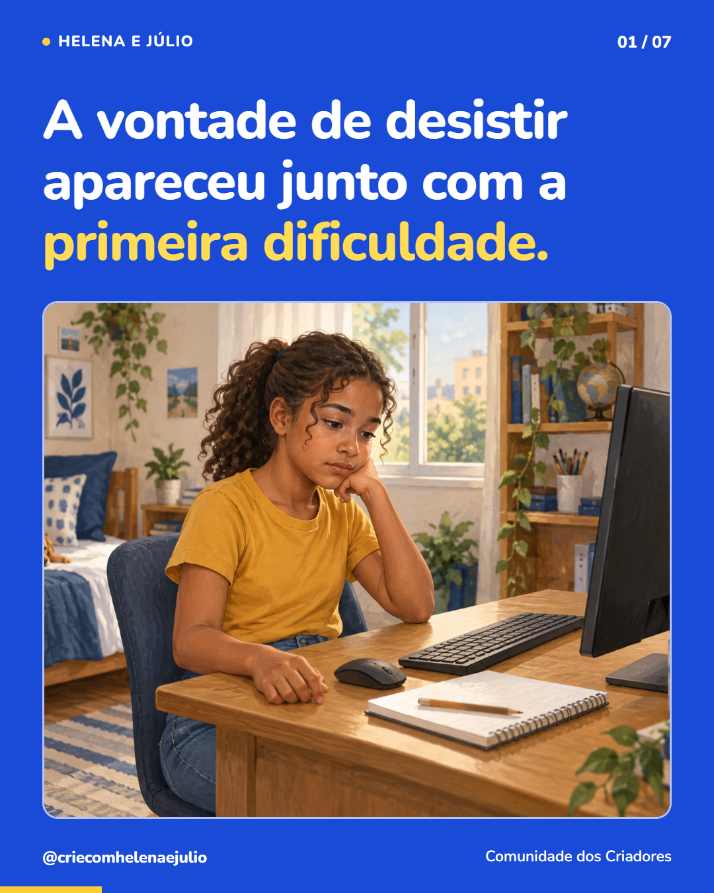
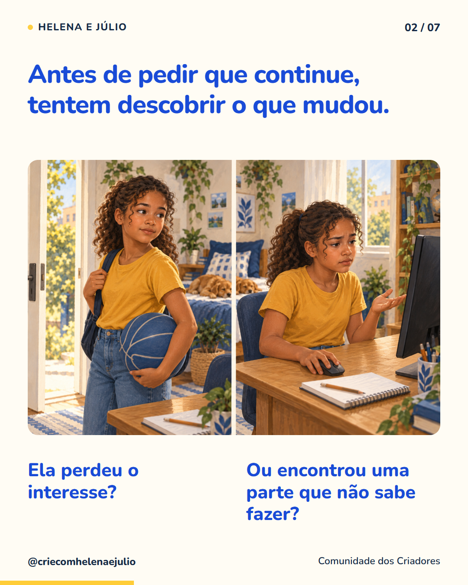
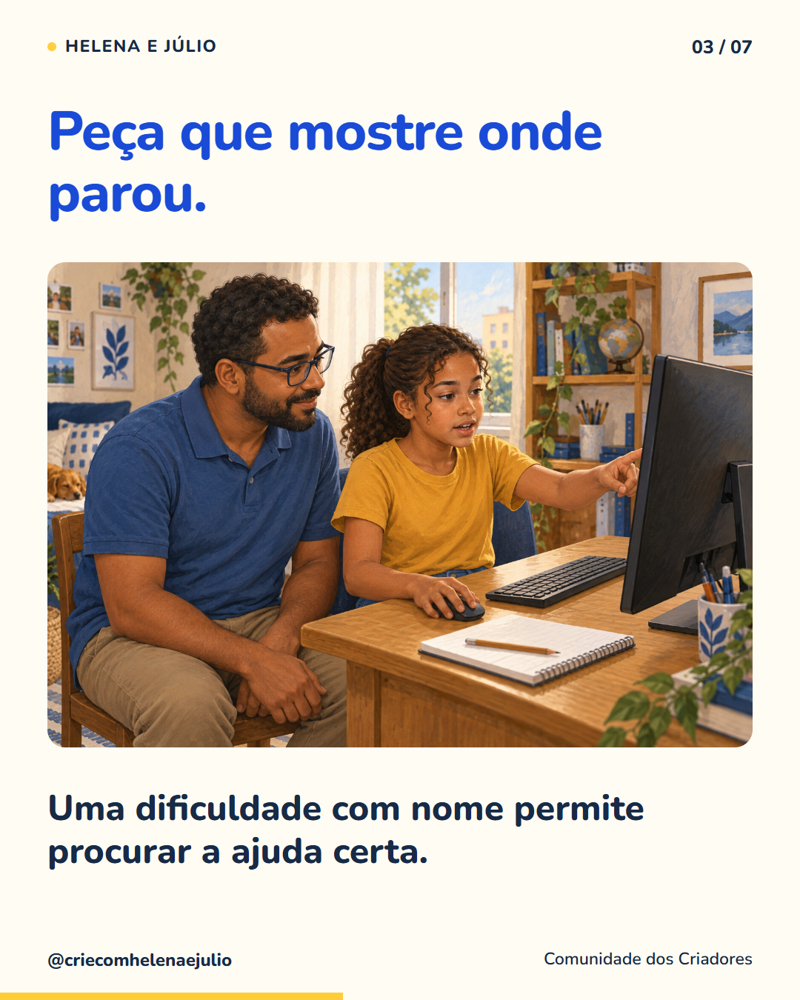
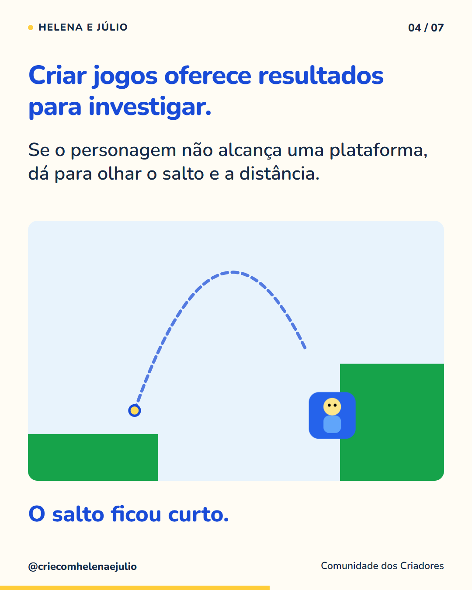
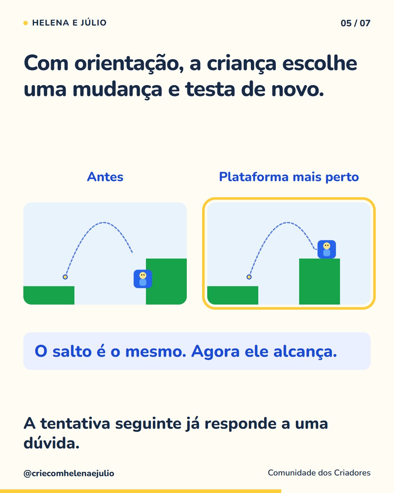
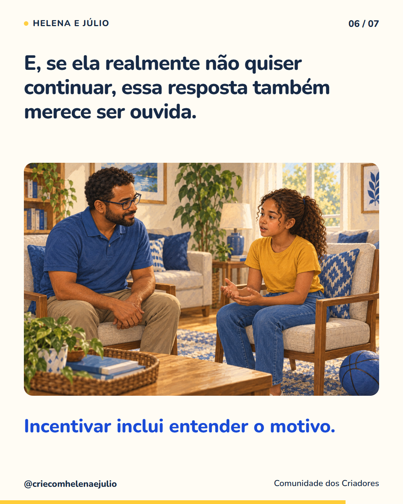
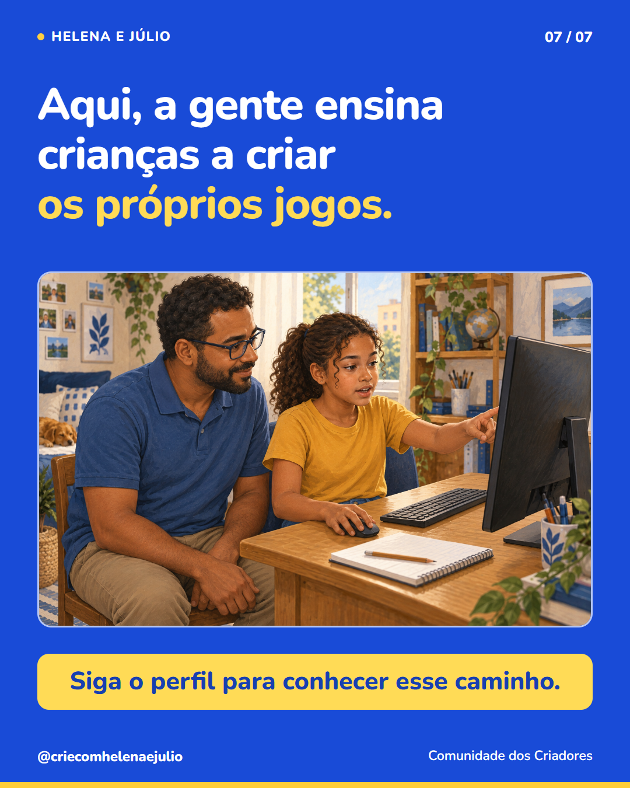

P07 · 7 slides · 1080 × 1350 · 4:5 · Legenda · Texto alternativo







Ilustrações de uma família fictícia e capturas reais de Mini plataforma, adaptado pela equipe. Convite para seguir o perfil no slide 7. Nada foi agendado ou publicado.